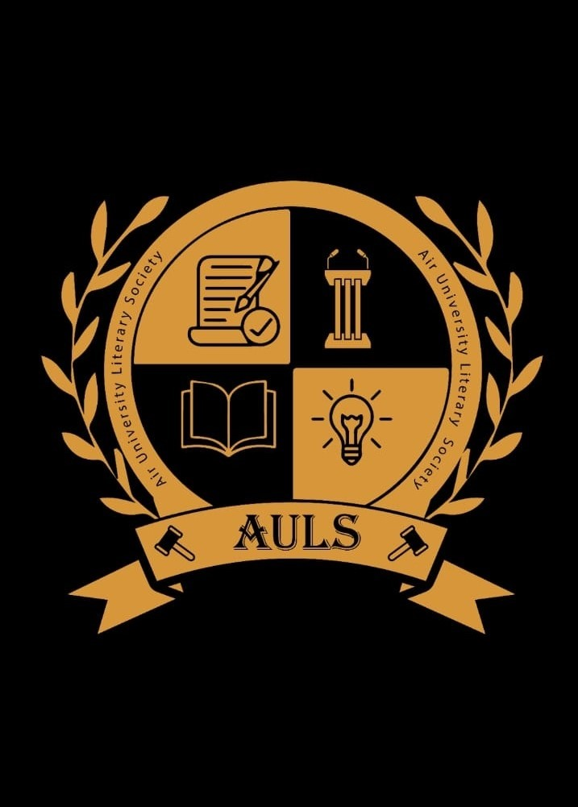
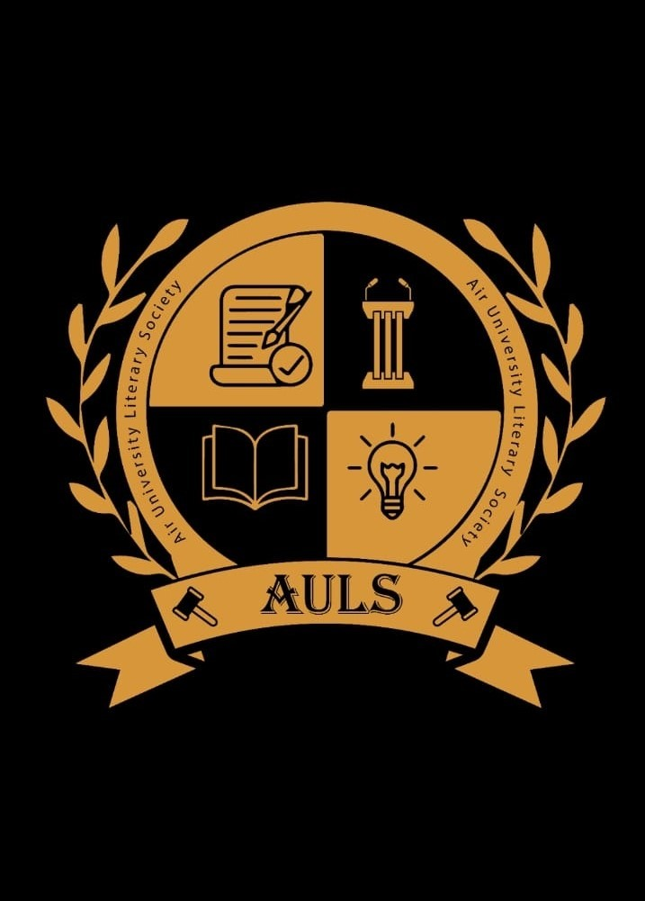

Air University provide students with a variety of opportunities to engage in extracurricular , social and welfare activities through our clubs and societies. These clubs and societies offer a platform for students to explore their interests, develop leadership skills, and collaborate with other people on various projects. The Student Affairs, also known as the Student Support Center,grant permission for clubs to hold different events, helping to create a vibrant campus life and foster a sense of community. AU SSC plays a crucial role in supporting these clubs by assisting in event organization, offering guidance, and ensuring the well-being of the students.
Air University (AU) is home to several dynamic tech societies that foster innovation and skill development among students. AUCSS (Air University Cyber Security Society) stands out as part of the university's Cyber Security Department—the only department of its kind in Pakistan— offering students exclusive opportunities and standing out to be the top ranked in Pakistan. As technology continues to evolve, these societies play a vital role in preparing students for the future by organizing workshops, hackathons, and seminars. They enable students to tackle real-world challenges, network with industry experts, and stay ahead in the rapidly transforming tech landscape. Here are some renowned tech societies at Air University Islamabad helping students to enhance their learning and embark on a journey of success.
Air University (AU) fosters creativity and cultural diversity through vibrant societies that celebrate arts and traditions while promoting unity among students. Societies like the Air University Dramatic Society (AUDS) showcase theatrical talent, the Air University Literary Society (AULS) encourages expression through literature, and the Music Society nurtures musical creativity with captivating performances. These societies provide platforms for students to explore their talents, develop skills, and celebrate Pakistan's rich heritage, enriching the overall university experience. Air University Cultural & Arts Society plays an important role in showcasing Pakistan's rich culture. Alongside these, many other societies actively contribute to celebrating creativity and promoting cultural harmony, enhancing the overall student experience.
Air University (AU) fosters a spirit of collaboration and well-being through its Community and Wellness Societies, which aim to enhance both individual and collective growth. The AU Sports Society promotes physical fitness and teamwork through engaging sports activities, while the AU Blood Donation Society embodies compassion by organizing life-saving donation drives. Additionally, the AU Corporate Social Responsibility (CSR) Society empowers students to make a positive social impact through various community welfare initiatives. Many other societies like SHA'OOR work for plantation that helps in fostering human environment. Air University Islamic Society helps students and communities to seek guidance of Allah helping students to be a positive part of society and helping students to attain closeness of ALlah (S.W.T).

 
